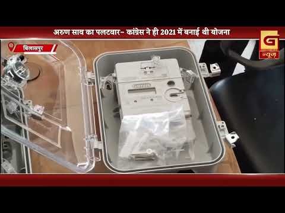
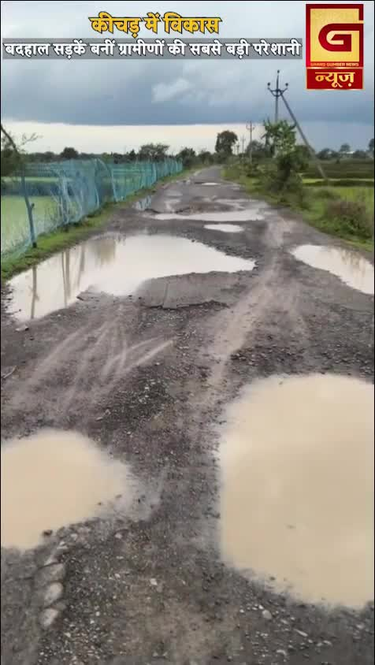
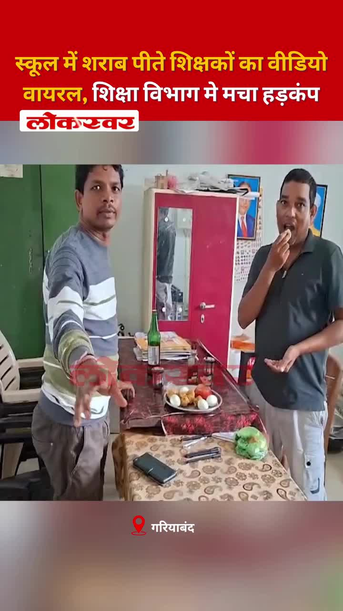
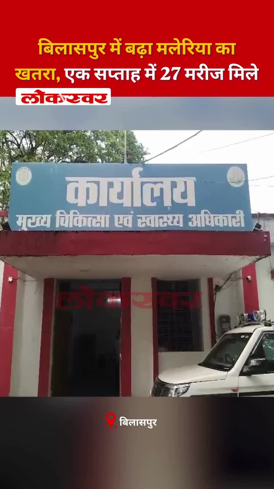
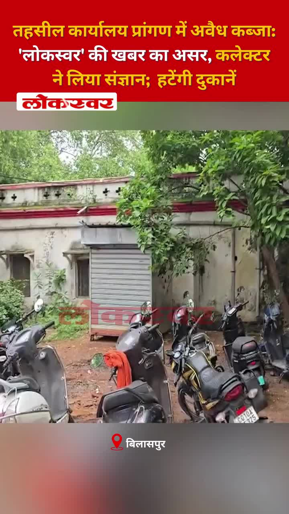
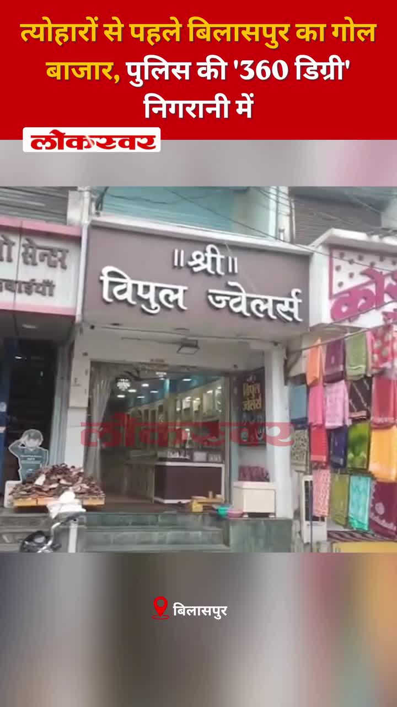
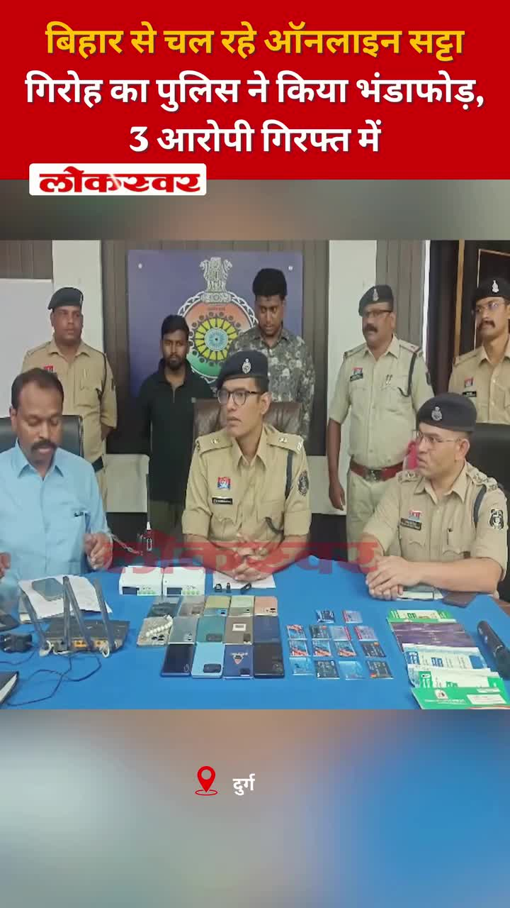

Bilaspur News Hub
2
BUSINESS
1
EDUCATION
5
EVENT
4
GOVERNMENT
1
HEALTH
2
INFRASTRUCTURE
28
INSTAGRAM NEWS
6
NEWS
4
POLICE
3
RAILWAY
10
YOUTUBE VIDEOS
BUSINESS2

Lokswar · Published: Sun, 02 Au | Scraped: 2026-08-02 09:56:16
A massive fire broke out at a liquor shop in Bilaspur's Trade Bihar area, causing lakhs of rupees in losses; the cause is under investigation.
G News Bilaspur · Published: 2026-08-02 | Scraped: 2026-08-02 16:46:23
A massive fire erupted in a liquor shop in Vyapar Vihar, causing beer bottles to explode and shake the area. No injuries were reported, and the cause is under investigation.
EDUCATION1

Nai Dunia Bilaspur · Published: Sun, 02 Au | Scraped: 2026-08-02 08:02:56
The government is preparing to admit 150 MBBS students at SIMS, with counseling processes finalized. This expansion will increase medical education capacity in Bilaspur.
EVENT5

CG Wall · Published: Sun, 02 Au | Scraped: 2026-08-02 14:56:54
The city organized a ceremony to honor E. Raghavendra Rao, a key figure in India's independence movement. His legacy continues to inspire generations 137 years after his birth.

CG Wall · Published: Sun, 02 Au | Scraped: 2026-08-02 16:46:23
On Sunday, a bridge on the Bilaspur–Pendra highway collapsed just as a bus carrying 35 passengers crossed, narrowly avoiding a catastrophic crash. The incident highlighted the urgent need for bridge safety inspections.

The Hitavada · Scraped: 2026-08-03 05:48:10
Indian shuttler Tanvi Sharma claimed her first BWF Super 300 title at the Taipei Open, defeating a top‑ranked opponent in the final. The victory marks a historic moment for Indian badminton.

The Hitavada · Scraped: 2026-08-03 05:48:10
Gulveer Singh became the first Indian athlete to win two medals at the Commonwealth Games, securing bronze in the men’s 5000m race. His performance adds to his previous medal and marks a historic achievement for Indian athletics.
G News Bilaspur · Published: 2026-08-02 | Scraped: 2026-08-02 16:46:23
PRIME AUG 02 event in Bilaspur, details to be announced. The program aims to highlight local initiatives and community engagement.
GOVERNMENT4

CG Wall · Published: Sun, 02 Au | Scraped: 2026-08-02 14:56:54
An order appointing Munnalal Dhruwe as Acting CEO of Kusmi Janpad Panchayat has raised serious questions about deputation misuse. The case highlights alleged irregularities in government postings.

Nai Dunia Bilaspur · Published: Mon, 03 Au | Scraped: 2026-08-03 05:48:10
The Food and Drug Administration of Bilaspur has imposed a strict ban on the use of analog (synthetic) paneer in hotels and restaurants, warning strict action if violated. The move aims to protect public health and ensure food safety standards.

Lokswar · Published: Mon, 03 Au | Scraped: 2026-08-03 05:48:10
Sandhya Singh has been named Pradesh Mahamantri of Loktantra Prahari after a key meeting in Raipur, marking a significant leadership role in the state's political arena.

G News Bilaspur · Published: 2026-08-02 | Scraped: 2026-08-02 16:46:23
Congress and BJP have publicly clashed over the smart meter implementation in Bilaspur, accusing each other of mishandling the project. The dispute highlights concerns about cost, accuracy, and consumer impact.
HEALTH1

Nai Dunia Bilaspur · Published: Mon, 03 Au | Scraped: 2026-08-03 05:48:10
After a brief lull, malaria cases have resurfaced in the Kota area of Bilaspur, with three new patients detected on Sunday. The health department has been put on high alert and is conducting mosquito control measures to curb the spread.
INFRASTRUCTURE2

CG Wall · Published: Sun, 02 Au | Scraped: 2026-08-02 16:46:23
A bridge at Bansajhal on the Ratanpur–Belghana–Gaurela–Pendra–Amarakantak highway collapsed, halting traffic. Authorities have opened alternative routes and plan repairs until the original route is restored.
G News Bilaspur · Published: 2026-08-02 | Scraped: 2026-08-02 16:46:23
A bridge on the Bilaspur-Pendra highway gave way, causing a passenger bus to crash. All occupants escaped unharmed, though the bridge damage is significant. Authorities have sealed the area and are assessing repairs.
INSTAGRAM NEWS28
Two teachers were found drinking beer inside Devjhar Amali school and misbehaved with journalists covering the incident. The case has sparked outrage over discipline in educational institutions.

Villagers of Devkirari in Bilha assembly suffer due to badly damaged roads and stagnant water, hampering daily travel and access to services. Residents demand immediate repairs.

The post appears empty or missing details, providing no substantive information for summarization.
Police intercepted a Volvo bus near Majhso and recovered 8.72 grams of heroin, arresting a young man from Uttar Pradesh. The seizure highlights ongoing drug trafficking concerns.

A video shows students partying with alcohol inside a school classroom, causing alarm and viral spread. The incident has sparked outrage and calls for strict action.

Bilaspur Health Dept reports 27 malaria cases in a week, raising concerns. Authorities urge residents to use mosquito nets and eliminate standing water to curb spread.
A liquor shop in Vyapar Vihar caught fire, destroying goods worth lakhs. The cause is under investigation and no injuries were reported.
A youth's body was found floating in a pond, prompting police investigation. Authorities have launched a probe to identify the victim and determine the cause of death.

Illegal encroachment at the tehsil office premises was reported, prompting collector action after a Lokswar exposé. The encroachment is expected to be removed soon.

Before the festivals, Gol Bazar in Bilaspur is under 360-degree police surveillance. The heightened monitoring aims to ensure law and order and prevent any mishaps.

Police have dismantled an online betting operation based in Bihar, apprehending three individuals involved. The crackdown follows intelligence inputs and highlights growing concerns over illegal gambling networks.
A school headmaster was placed in police custody following allegations of inappropriate behavior towards female students. The incident was reported after students lodged a complaint, prompting an investigation.
Two migrant laborers from Chhattisgarh were killed in a terrorist attack in Kulgam, prompting grief across the state. Chief Minister expressed deep shock and announced assistance for families.
The Ghonga reservoir is currently overflowing, offering a picturesque sight to visitors. The high water level highlights the region's water resources and scenic beauty.
A social media post invites users to share their village name, promising a future visit to their hometown. It aims to connect communities across Chhattisgarh.
The Bilaspur district administration launched an Instagram campaign promoting drug-free youth under #vikshitbharat2047. The post uses reels to spread awareness and encourage young people to stay away from alcohol and drugs.
A national resolve campaign was launched at Guru Ghasidas Central University to promote drug-free youth and develop a healthier society. The event emphasized collective commitment towards a drug-free future under the Vikshit Bharat initiative.
Smart meters now provide real-time electricity consumption data, allowing households to monitor usage instantly and manage expenses better. This initiative helps reduce unnecessary power consumption and promotes energy efficiency in Bilaspur.
The Lok Sabha introduced an amendment bill to curb paper leaks, strengthening examination integrity. This move is expected to restore trust among students and ensure fair assessment processes. Authorities praised the strict measures as a step toward transparent education.
A safety awareness campaign urges parents to stay alert to protect children from potential dangers. The initiative highlights the importance of vigilance and proactive measures in ensuring children's security. Community participation is encouraged to create a safer environment for kids.
NEWS6

Nai Dunia Bilaspur · Published: Sun, 02 Au | Scraped: 2026-08-02 08:02:56
<img src="https://img.naidunia.com/naidunia/ndnimg/02082026/02_08_2026-high_courtcg.jpg" />छत्तीसगढ़ के वरिष्ठ आईपीएस अधिकारी रतनलाल डांगी के खिलाफ पीड़िता ने अधिवक्ता अभिषेक पांडेय के जरिए हाई कोर्ट में रिट याचिका दायर की है। याचिका में तत्कालीन आईजी आनंद छाबड़ा और डीआईजी मिलना कुर्रे की जांच भूमिक

Nai Dunia Bilaspur · Published: Sun, 02 Au | Scraped: 2026-08-02 08:02:56
<img src="https://img.naidunia.com/naidunia/ndnimg/02082026/02_08_2026-vyaparviharaag.jpg" />बिलासपुर के व्यापार विहार स्थित शासकीय शराब दुकान में रविवार तड़के करीब 2 बजे भीषण आग लग गई। आग से दुकान के भीतर रखी शराब की बोतलें तेज धमाकों के साथ फटने लगीं और शराब का स्टॉक व फर्नीचर पूरी तरह जलकर खाक हो

Nai Dunia Bilaspur · Published: Sun, 02 Au | Scraped: 2026-08-02 18:51:44
<img src="https://img.naidunia.com/naidunia/ndnimg/02082026/02_08_2026-bridge_collapse_bilaspur_2aug.jpg" />रतनपुर-पेंड्रा मार्ग पर चांपी नाला का 60 साल पुराना जर्जर रपटा अचानक धसक गया, जिससे पेंड्रा से आ रही 35 यात्रियों से भरी बस बीचों-बीच फंस गई।

The Hitavada · Scraped: 2026-08-02 08:02:56

The Hitavada · Scraped: 2026-08-02 08:02:56

The Hitavada · Scraped: 2026-08-02 08:02:56
POLICE4

Lokswar · Published: Sun, 02 Au | Scraped: 2026-08-02 09:56:16
Janjgir-Champa police seized a large marijuana consignment worth lakhs and arrested four smugglers, two women, highlighting the crackdown on illegal drug trafficking.

CG Wall · Published: Sun, 02 Au | Scraped: 2026-08-02 14:56:54
Police arrested four men who threatened an elderly family with death and accidents to hand over ₹14.5 lakh and 450 grams of gold. The victims were coerced before the robbery took place.

CG Wall · Published: Sun, 02 Au | Scraped: 2026-08-02 14:56:54
Sigiti police intercepted a large consignment of illegal liquor during a crackdown on bootlegging. The operation led to the arrest of several individuals involved in the illicit trade.

CG Wall · Published: Sun, 02 Au | Scraped: 2026-08-02 16:46:23
Kotah police launched a swift operation against illegal cow slaughter, confiscating meat, weapons, and a motorcycle. Two suspects were arrested and sent to jail as part of the ongoing anti-cattle slaughter drive.
RAILWAY3

BREAKINGExtra coaches added to trains for RRB exam / 2 से 24 अगस्त तक ट्रेनों में अतिरिक्त डिब्बे जोड़े गए
Nai Dunia Bilaspur · Published: Sun, 02 Au | Scraped: 2026-08-02 09:56:16
Railways will attach additional coaches to trains from 2 to 24 August to accommodate RRB exam aspirants, easing overcrowding for millions of candidates.

Nai Dunia Bilaspur · Published: Sun, 02 Au | Scraped: 2026-08-02 16:46:23
The South East Central Railway is rapidly deploying the indigenous Kavach safety system across Chhattisgarh, aiming to prevent accidents. This automated signaling and train protection technology will enhance rail travel safety for passengers and freight.

Lokswar · Published: Mon, 03 Au | Scraped: 2026-08-03 05:48:10
A passenger train caught fire at Simri Bakhtiyarpur station in Bihar, but quick response allowed all passengers to evacuate safely. No casualties were reported, and the incident highlights the importance of emergency preparedness on Indian railways.
YOUTUBE VIDEOS10


A video showing teachers misbehaving in a government school has gone viral, sparking public outrage and calls for disciplinary action. Authorities have launched an investigation into the incident.


An MLA sharply criticized the state government for the implementation of smart meters, alleging irregularities and consumer grievances. The issue is expected to be raised in the upcoming assembly session.


A brief morning news roundup covering key developments in Bilaspur as of August 2, 2026.


Shivarinarayan Dham in Bilaspur remains a major pilgrimage site, drawing devotees and supporting regional tourism and cultural activities.
Police have registered a case against several youths, including an SI's son, for extortion and intimidation. The incident highlights the growing menace of blackmail in the region.
The Shiva temple in Bilaspur will resonate with chants of 'Har Har Mahadev' during the upcoming festival. Devotees are eagerly awaiting the spiritual gathering.
The Union Club in Bilaspur completed its annual general meeting, reviewing activities and planning future initiatives. Members expressed satisfaction with the club's progress.
A violent clash erupted outside a school in Bilaspur, resulting in injuries. Police have initiated an investigation and arrested several involved individuals.


The evening final news bulletin from Grand News Bilaspur provides latest updates and headlines for August 2, 2026. Viewers can stay informed with regional and national news coverage.